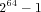
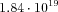

The Next-Reaction-Method
This stochastic simulation method utilizes the algorithm developed by Gibson and Bruck [
Gibson00]. For each reaction a putative stochastic reaction time is calculated and the reaction with the shortest reaction time will be realized. The set of reactions is organized in a priority queue to allow for the efficient search for the fastest reaction. In addition, by using a so-called dependency graph only those reaction times are recalculated in each step, that are dependent on the reaction, which has been realized. This simulation method requires all the reactions to be irreversible. However, COPASI provides a tool, that converts all reversible reactions into irreversible ones. Because the algorithm internally works on discrete particle numbers rather than concentrations, the particle numbers in the system must not exceed a value of  which is approximately .
The current implementation of the Next Reaction Method is very inefficient when the model contains assignment rules, which leads to extended calculation times.
There is a restriction regarding global quantities: If a differential equation is provided for a global quantity (the quantity is of type "ode") the model cannot be simulated stochastically with the current version of COPASI. If the global quantity is of type "assignment" stochastic simulation is possible but not as efficient as for models without assignments. No restrictions apply for "fixed" global quantities.
Options for the Next-Reaction-Method
- Max Internal Steps
- This parameter is a positive integer value specifying the maximal number of internal steps the integrator is allowed to take before the next desired reporting time. The default value is '1000000'.
- Subtype
- This parameter is ignored in the current version of COPASI.
- Use Random Seed
- This flag can be '0' or '1' and determines if the user-defined random seed should be used for the calculation. The default is '0' meaning that the random seed is set to a random value before each run and consecutively calculated trajectories will be different. If the value of this flag is set to '1', the user-defined random seed will be used and each calculated trajectory will be the same for the same value of the given random seed.
- Random Seed
- This unsigned integer is used as random seed in the calculations, if the flag Use Random Seed is set to '1'. The default value is '1'.